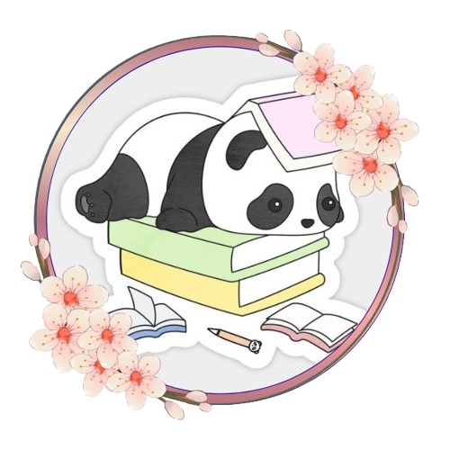

Linyu
Hi, I’m Linyu — a Scholar based in Indonesia. I like to think of myself as someone who’s constantly building, breaking, and rebuilding ideas until they start to feel right. Whether it’s coding, design, writing, music, animation, or late-night experiments with new concepts, I enjoy the process of turning my imagination into something real. Most of my time is spent exploring skills I enjoy and interested in, learning how things work, and finding better ways to create them. I don’t really believe in “final versions” — just evolving ones. Outside of that, I’m usually Reading novels,watch drama/cartoon listening to music, gaming, drawing, collecting inspiration from small details most people overlook. I find that even the quietest moments often turn into the best ideas. Right now, I’m focused on improving myself in [your current focus/goal], and building projects that reflect who I am becoming — not just what I already know. If you’re here, welcome to my space. It’s a small corner of the internet where ideas grow slowly, but honestly.